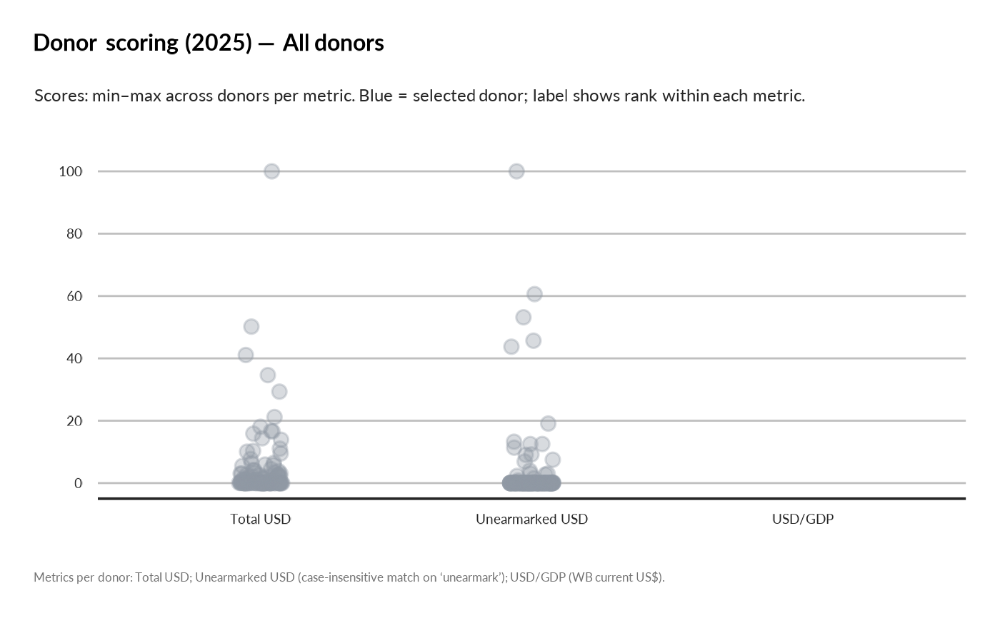
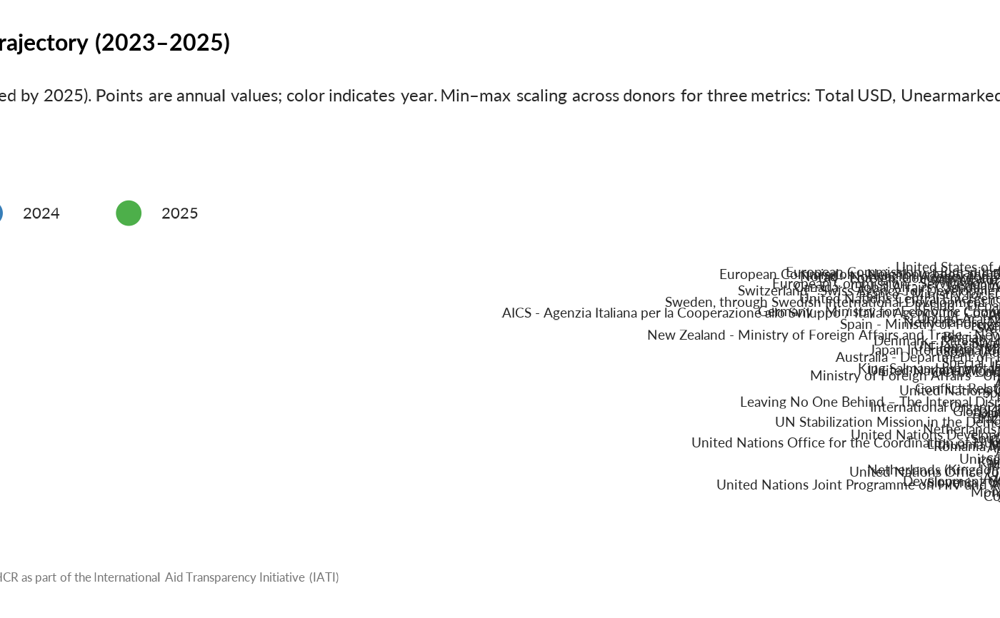
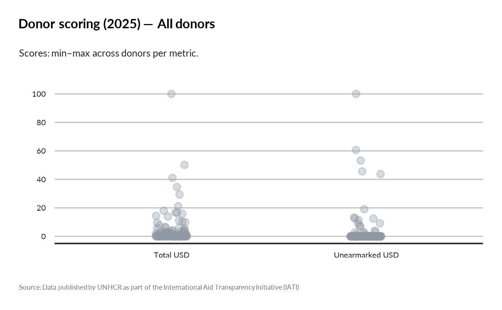
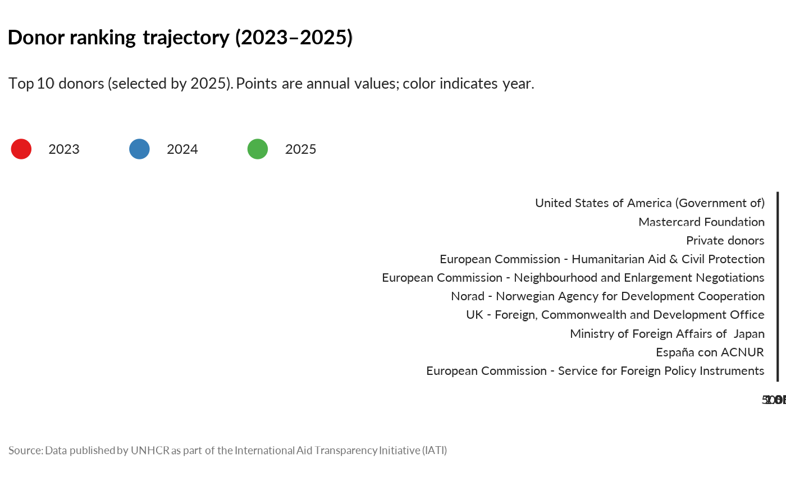
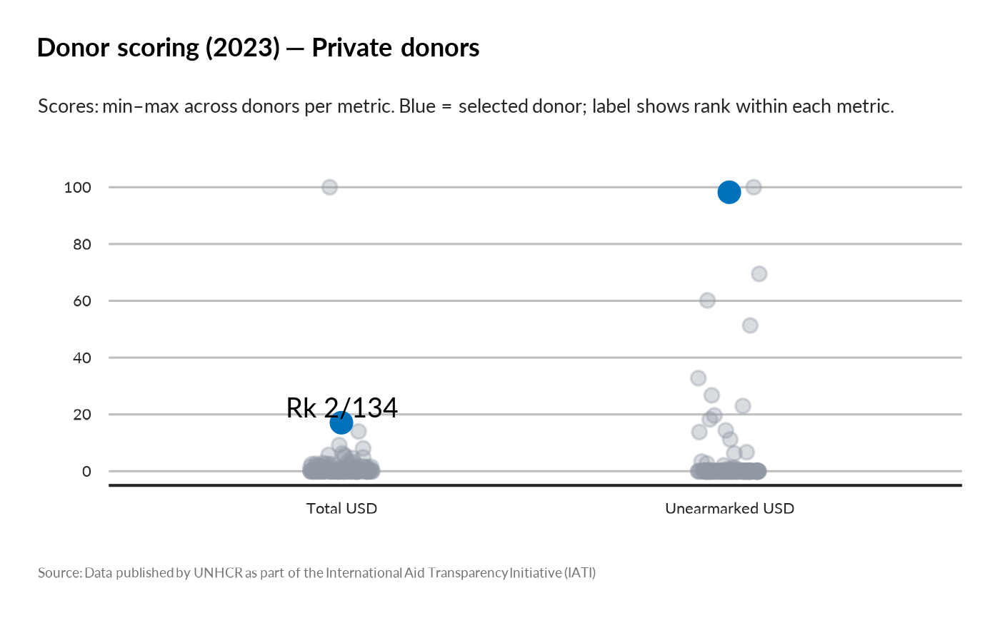

Generate Donor Ranking Visualizations with Scoring Metrics
Source:R/show_donor_ranking.R
show_donor_ranking.RdThis function creates two types of visualizations: 1. **Multi-year trajectory**: Shows donor ranking changes across multiple years 2. **Single-year scoring**: Creates a lollipop plot comparing donors across three scaled metrics (0-100) with optional World Bank population/GDP weighting
Usage
show_donor_ranking(
donor_name = NULL,
top_n_display = 10,
year = NULL,
ctr_name = NULL,
weight_by = c("none", "population", "gdp", "population_gdp"),
donor_country_map = NULL,
wb_lang = "en",
top_n_earmarking = 8,
verbose = TRUE
)Arguments
- donor_name
Character. Specific donor to highlight in the visualization. If NULL, all donors are shown in equal color. For single-year scoring, the highlighted donor appears in blue with rank labels.
- top_n_display
Integer. Number of top donors to display in multi-year trajectory plots (ranked by reference year total).
- year
Integer or vector of integers. Year(s) to analyze. If NULL, uses the latest available year. If multiple years provided, creates trajectory plot.
- ctr_name
Character vector. Filter for specific recipient country/countries. If NULL, includes all countries.
- weight_by
Character. Weighting method for multi-year trajectory: - "none": Raw USD values - "population": USD per capita - "gdp": USD per GDP - "population_gdp": USD per capita per GDP
- donor_country_map
Named character vector. Optional mapping from donor organization names to World Bank country names for GDP/population lookups. Format: c("donor_org" = "country_name")
- wb_lang
Character. Language for World Bank country names ("en", "fr", etc.).
- top_n_earmarking
Integer. For single-year scoring, number of top earmarking categories to display (not currently used in scoring mode).
- verbose
Logical. If TRUE, prints progress messages and data summaries.
Value
A ggplot2 object. The plot type depends on input parameters: - Multi-year: Ranking trajectory with connected points - Single-year: Lollipop scoring plot with three metrics (0-100 scale)
Details
In single-year mode, the function computes: - **Total USD**: All incoming commitments - **Unearmarked USD**: Funds marked as "unearmarked" (case-insensitive) - **USD/GDP**: Total USD divided by donor country GDP (from World Bank) Each metric is scaled 0-100 across donors (min-max scaling) and ranks are computed.
Examples
# Single-year scoring for all donors
show_donor_ranking(year = 2023)
#> Excluding USD/GDP metric - insufficient data (only 0 donors have GDP data)
#> Single-year scoring plot created for year: 2023
#> Total donors included: 134
#> Donors with GDP data: 0
#> Tip: Use donor_name parameter to highlight a specific donor.

# Highlight specific donor in single-year scoring
show_donor_ranking(donor_name = "USA", year = 2023)
#> Error in show_donor_ranking(donor_name = "USA", year = 2023): Donor 'USA' not found in data for year 2023.
# Multi-year trajectory for top 15 donors
show_donor_ranking(year = 2020:2023, top_n_display = 15)

# With country filtering
show_donor_ranking(
year = 2023,
ctr_name = c("Ukraine", "Syria"),
donor_name = "Germany"
)
#> Error in show_donor_ranking(year = 2023, ctr_name = c("Ukraine", "Syria"), donor_name = "Germany"): Donor 'Germany' not found in data for year 2023.
# With GDP weighting in multi-year mode
show_donor_ranking(
year = 2020:2022,
weight_by = "gdp",
top_n_display = 10
)
#> Error in dplyr::filter(dplyr::left_join(df_year, dplyr::rename(wb_weights, year_tx = .data$year_wb), by = c("transaction_provider_org", "year_tx")), !(is.na(.data$population) & weight_by %in% c("population", "population_gdp")), !(is.na(.data$gdp) & weight_by %in% c("gdp", "population_gdp"))): ℹ In argument: `!(is.na(.data$population) & weight_by %in%
#> c("population", "population_gdp"))`.
#> Caused by error in `.data$population`:
#> ! Column `population` not found in `.data`.
# Example usage:
show_donor_ranking(
year = 2025,
top_n_display = 20 )
#> Excluding USD/GDP metric - insufficient data (only 0 donors have GDP data)
#> Single-year scoring plot created for year: 2025
#> Total donors included: 126
#> Donors with GDP data: 0
#> Tip: Use donor_name parameter to highlight a specific donor.

show_donor_ranking(
donor_name = "Private donors",
year = c(2023,2024,2025),
top_n_display = 10
)

show_donor_ranking(
donor_name = "Private donors",
year = 2023,
top_n_display = 10 )
#> Excluding USD/GDP metric - insufficient data (only 0 donors have GDP data)
#> Single-year scoring plot created for year: 2023
#> Total donors included: 134
#> Donors with GDP data: 0
